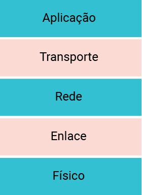

Arquitetura TCP/IP ou internet
Arquitetura e Internet
Confira agora os principais pontos sobre arquitetura e internet.
Conforme comentamos, o modelo OSI é um modelo de referência e não é utilizado na prática.
As redes que utilizamos empregam a arquitetura TCP/IP ou arquitetura internet. Originalmente, a arquitetura TCP/IP emprega quatro camadas (aplicação, transporte, inter-rede e intrarrede). Entretanto, por fins didáticos, utilizaremos um modelo formado por cinco camadas: aplicação, transporte, rede, enlace e físico, como mostra a imagem a seguir. No modelo de cinco camadas, a camada de intrarrede é dividida em camada de enlace e física. Confira!

Conforme podemos observar, a diferença que temos entre o modelo OSI e a arquitetura de cinco camadas é a ausência das camadas de apresentação e sessão. As funções dessas duas camadas são absorvidas pela camada de aplicação.
Um detalhe que você deve ter percebido é que, quando falamos do OSI, sempre falamos sobre modelo e agora no TCP/IP estamos usando a expressão arquitetura. Por que essa diferença?
Essa diferença ocorre pelo fato de o OSI não definir protocolos. Já no TCP/IP, temos um conjunto de protocolos associados, conhecidos como a pilha de protocolos TCP/IP, que nada mais são do que o conjunto de protocolos implementados por todas as camadas da arquitetura.
Pilha de protocolos da internet
A camada de aplicação tem a mesma função da camada do modelo OSI, acrescido das funções da apresentação e sessão. Nessa camada, estão definidos alguns dos principais protocolos utilizados atualmente, como o HTTP (HyperText Transfer Protocolo), DNS (Domain Name Server), SMTP (Simple Mail Transfer Protocolo), entre muitos outros.
A camada de transporte tem a responsabilidade de garantir a confiabilidade das informações trocadas pelas aplicações. Há dois protocolos de transporte na internet, vejamos a seguir:
TCP
[Provê serviços orientados à conexão para suas aplicações. Alguns serviços são: entrega garantida de mensagens, controle de fluxo (compatibilização das velocidades do remetente e do receptor), controle de congestionamento (uma origem reduz sua velocidade de transmissão quando a rede está congestionada) e garantia da ordem das mensagens.]
UDP
[Provê serviço não orientado à conexão para suas aplicações. É um serviço econômico sem controle de fluxo e de congestionamento adequado para as aplicações que toleram perda de pacotes, mas não toleram atrasos.]
Rede
A camada de rede segue a mesma função da camada de rede do modelo OSI, mas agora são definidos o formato do endereço e as regras de encaminhamento. Essa definição é feita pelo protocolo IP (Internet Protocol).
Enlace e Física
As camadas de enlace e físicas não são definidas de forma explícita na arquitetura internet, mas elas executam o mesmo papel previsto no modelo OSI. Alguns dos padrões utilizados nessas camadas de enlace são o ethernet, wi-fi e bluetooth.